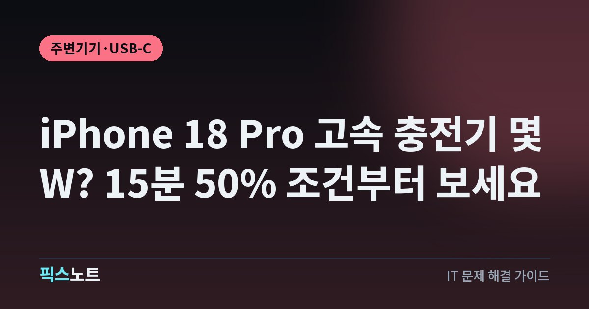

iPhone 18 Pro 고속 충전기 몇 W? 15분 50% 조건부터 보세요
iPhone 18 Pro 유선·MagSafe 급속 충전 조건과 어댑터·USB-C 케이블을 고를 때 볼 기준을 정리합니다.

iPhone 18 Pro는 예전 아이폰과 급속 충전 기준이 같지 않아요. Apple의 국내 사양표는 유선으로 약 15분에 최대 50%를 충전하려면 AVS를 지원하는 60W 이상 어댑터와 USB-C 충전 케이블을 조건으로 제시합니다. 단순히 ‘60W’ 숫자만 보지 말고 AVS·USB-PD 지원과 충전 방식까지 같이 봐야 해요.
1. 15분 50%를 원하면 60W 이상과 AVS를 같이 봐요
Apple의 iPhone 18 Pro 국내 제품 사양은 유선 급속 충전 조건을 구체적으로 적고 있어요. USB-C 충전 케이블과 함께 가변 전압 공급 기술인 AVS를 지원하는 60W 이상 규격의 어댑터를 사용하면 약 15분에 최대 50% 충전이 가능하다고 안내합니다. 여기서 중요한 건 60W라는 출력 숫자만이 아니라 AVS 지원까지 조건에 들어간다는 점이에요. 같은 60W급 충전기라도 지원하는 전력 규격이 다르면 Apple이 밝힌 15분 조건과 같은 결과를 보장할 수 없습니다.
- 충전기 정격 출력이 60W 이상인지 확인해요.
- 제품 설명에서 USB-PD와 AVS 지원 여부를 확인해요.
- USB-C 충전 케이블을 연결해 충전해요.
2. 기존 20W·30W 충전기도 계속 쓸 수 있어요
Apple의 USB-C 연결 안내는 20W USB-C 전원 어댑터나 더 높은 와트 수의 USB-C 어댑터로 iPhone을 더 빠르게 충전할 수 있다고 설명하고, 급속 충전 문서에서는 USB-PD를 지원하는 호환 어댑터를 사용할 수 있다고 안내해요. 따라서 집에 있는 20W나 30W USB-C PD 충전기가 규격에 맞는다면 iPhone 18 Pro 충전 자체에는 사용할 수 있습니다. 다만 iPhone 18 Pro 사양표가 제시한 ‘약 15분 최대 50%’ 조건은 60W 이상 AVS 어댑터이므로 둘을 같은 속도로 보면 안 돼요. 평소 밤새 충전하거나 충전 시간을 크게 신경 쓰지 않는다면 기존 충전기를 굳이 버릴 필요는 없습니다.
3. 케이블은 충전과 고속 데이터를 따로 확인해요
iPhone 18 Pro에는 USB-C 충전 케이블이 포함되고 Apple은 USB-C 표준을 준수하는 케이블과 전원 어댑터로 충전할 수 있다고 안내해요. 다만 충전만 되는 케이블과 고속 데이터까지 지원하는 케이블은 용도가 다릅니다. Apple의 USB-C 안내에 따르면 iPhone 18 Pro 모델은 선택 사항인 USB 3 케이블을 사용할 때 최대 10Gbit/s의 USB 3.2 Gen 2 속도를 지원해요. 외장 SSD로 사진이나 동영상을 자주 옮길 계획이라면 충전 출력만 보고 케이블을 고르면 데이터 속도에서 손해를 볼 수 있습니다.
- 충전만 할 케이블이면 필요한 전력 전달 규격을 확인해요.
- 외장 SSD도 연결할 거라면 USB 3 고속 데이터 지원 여부를 따로 봐요.
- 제품 페이지에서 전력과 데이터 규격이 각각 어떻게 적혀 있는지 확인해요.
4. 맥북 USB-C 충전기를 함께 써도 돼요
Apple은 20W 이상 USB-C 어댑터뿐 아니라 Mac 노트북과 함께 제공된 더 높은 와트 수의 USB-C 전원 어댑터도 iPhone에 사용할 수 있다고 설명해요. USB-PD 계열 충전은 기기와 어댑터가 지원하는 범위 안에서 전력을 협상하므로 고출력 어댑터라는 이유만으로 iPhone이 어댑터의 정격 출력을 그대로 받아들이는 방식은 아닙니다. 따라서 집에 60W 이상급 맥북 USB-C 어댑터가 있다면 별도 충전기를 하나 더 사지 않고 활용할 수 있어요. 다만 iPhone 18 Pro의 약 15분 조건을 목표로 한다면 그 어댑터가 AVS까지 지원하는지는 제품 사양에서 확인해야 합니다.
5. MagSafe는 유선과 필요한 어댑터 조건이 달라요
iPhone 18 Pro 제품 사양은 MagSafe 급속 충전에 별도의 조건을 적고 있습니다. MagSafe 충전기와 35W 이상 규격의 어댑터를 함께 사용할 때 약 30분에 최대 50% 충전이 가능하다고 안내해요. 유선 충전의 60W 이상 AVS 조건과 숫자가 다르므로 충전 방식별로 어댑터를 따로 이해해야 합니다. 이미 MagSafe 충전기를 쓰고 있다면 60W 어댑터가 있어야만 무선 급속 충전이 된다고 생각할 필요는 없어요.
- 무선 충전이 목적이면 사용 중인 MagSafe 충전기가 호환 모델인지 확인해요.
- 어댑터가 35W 이상 조건을 충족하는지 봐요.
- 케이스와 정렬 상태 때문에 충전이 불안정하지 않은지도 확인해요.
유선의 최고 속도가 필요한지, 편한 무선 충전이 중요한지에 따라 고르면 됩니다.
6. 멀티포트 제품은 총 출력보다 포트별 출력을 봐요
시중 멀티포트 충전기는 본체에 100W나 140W처럼 큰 숫자가 적혀 있어도 여러 기기를 동시에 연결하면 각 포트에 배분되는 출력이 달라지는 경우가 많아요. iPhone 18 Pro의 약 15분 최대 50% 조건을 노린다면 아이폰을 꽂는 포트가 단독 또는 동시 사용 상태에서 60W 이상을 제공하는지, 그리고 AVS를 지원하는지 제품 사양에서 확인해야 합니다. 노트북과 아이폰을 함께 연결했을 때 아이폰 포트가 30W나 45W로 내려간다면 충전은 되더라도 Apple의 최고 급속 충전 조건과 달라져요.
- 충전기 전체 최대 출력만 보지 말아요.
- 사용할 USB-C 포트의 단독 출력과 동시 출력 표를 확인해요.
- AVS와 USB-PD 지원 표기를 확인해요.
- 외장 SSD도 쓸 거라면 케이블의 USB 3 데이터 규격까지 따로 확인해요.
이 기준이면 필요 이상으로 비싼 충전기나 케이블을 살 가능성을 줄일 수 있어요.
자주 묻는 질문
iPhone 18 Pro는 60W 충전기를 꼭 써야 하나요?
꼭 그렇지는 않아요. 호환되는 20W 이상 USB-C PD 어댑터로도 충전할 수 있습니다. 다만 Apple이 밝힌 약 15분 최대 50% 유선 급속 충전 조건은 AVS를 지원하는 60W 이상 어댑터입니다.
맥북 USB-C 충전기를 iPhone 18 Pro에 써도 되나요?
Apple은 Mac 노트북과 함께 제공된 더 높은 와트 수의 USB-C 전원 어댑터도 iPhone 충전에 사용할 수 있다고 안내합니다. 최고 급속 충전을 원하면 해당 어댑터의 AVS 지원 여부도 확인하세요.
iPhone 18 Pro 기본 케이블로 고속 충전이 되나요?
Apple 사양은 USB-C 충전 케이블과 60W 이상 AVS 어댑터 조합을 공식 급속 충전 조건으로 제시합니다. 외장 SSD의 최대 데이터 속도까지 필요하다면 USB 3 지원 케이블인지 별도로 확인해야 해요.
MagSafe로 iPhone 18 Pro를 빨리 충전하려면 몇 W가 필요한가요?
Apple은 iPhone 18 Pro에서 MagSafe 충전기와 35W 이상 규격의 어댑터를 함께 사용할 때 약 30분에 최대 50% 충전이 가능하다고 안내합니다.